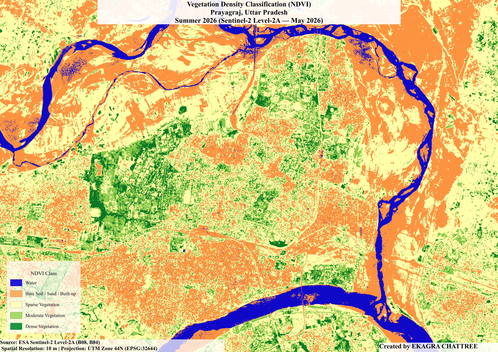
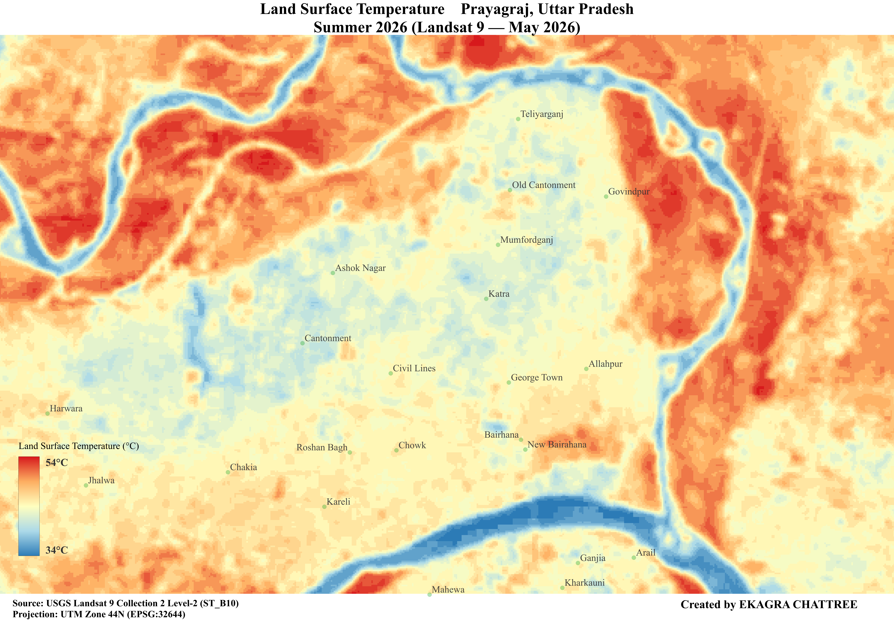
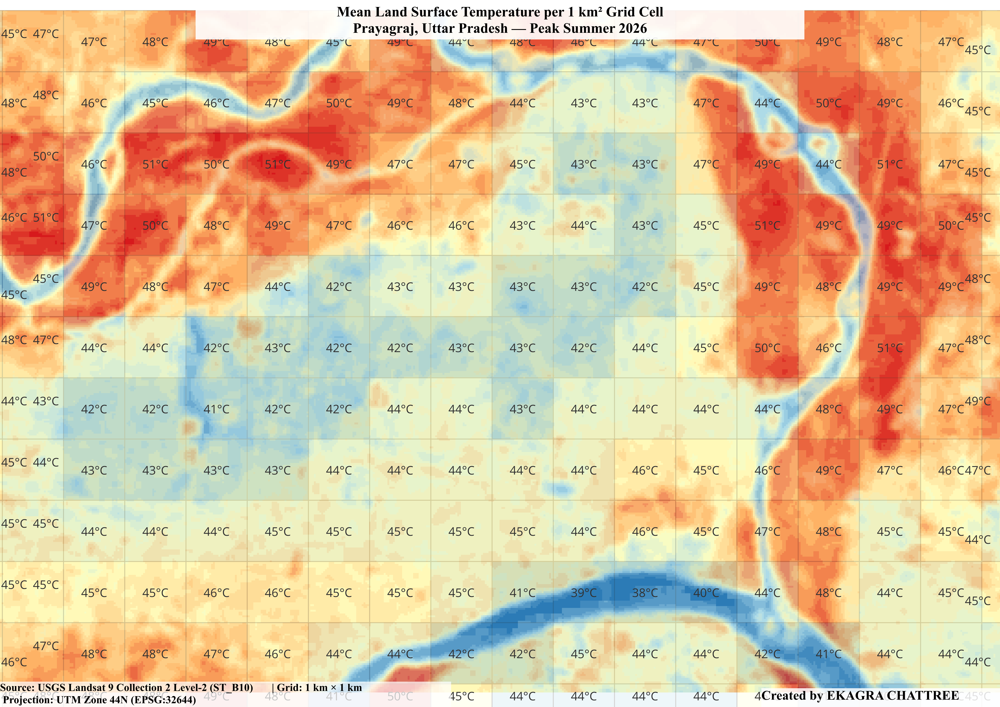
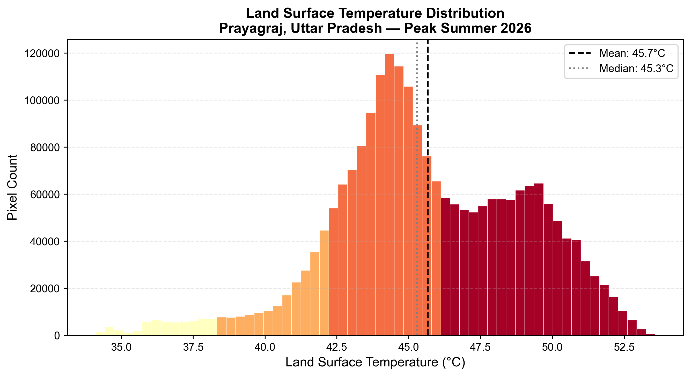
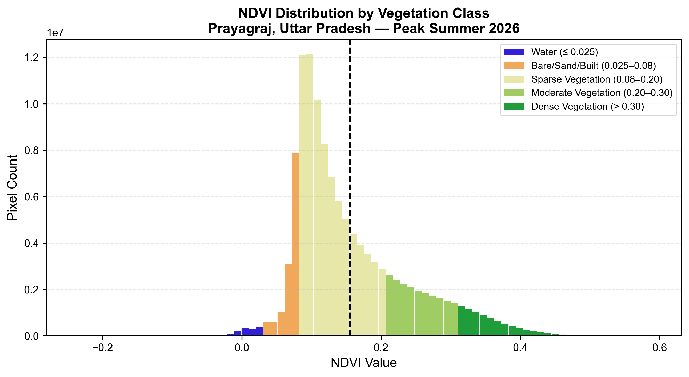
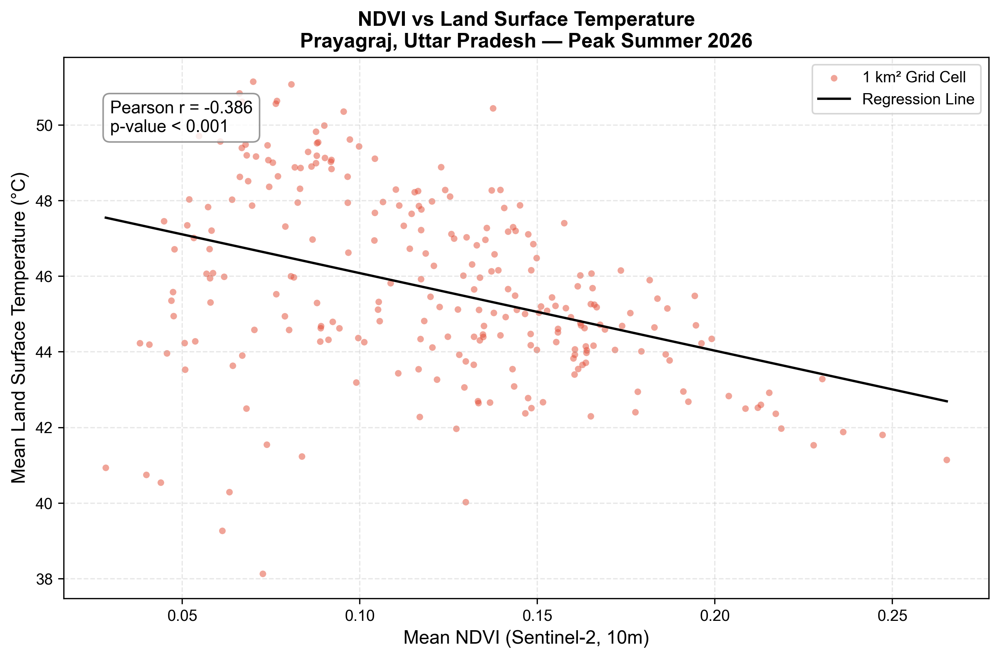

Remote Sensing & GIS-Based Assessment of Surface Thermal Patterns During the 2026 North Indian Heatwave
Remote Sensing · GIS · Land Surface Temperature · NDVI · Python · QGIS · 2026
This study investigates the spatial distribution of Urban Heat Islands (UHI) across Prayagraj, Uttar Pradesh, India, using multi-sensor satellite remote sensing and geospatial analysis. Land Surface Temperature (LST) was derived from Landsat 9 Collection 2 Level-2 thermal data, and vegetation density was assessed using the Normalized Difference Vegetation Index (NDVI) computed from Sentinel-2 Level-2A imagery. Both datasets were acquired during the peak of the 2026 North Indian heatwave, one of the most intense heat events recorded in the region in over a century , providing a temporally critical and scientifically relevant observational window. The analysis employed 1 km² grid-based zonal statistics to characterize spatial variation in surface temperature and vegetation cover across the study area. Results demonstrate a statistically significant negative correlation between NDVI and LST (Pearson r = −0.386, p < 0.001), confirming that vegetation cover exerts a measurable cooling influence on surface temperatures. Mean LST across the study area reached 45.7°C, with extreme hotspots recording values above 51°C in the dense northwestern urban core, while river channels of the Ganga and Yamuna registered temperatures as low as 38–39°C. The study provides spatial evidence in support of evidence-based urban greening interventions and contributes to the growing body of literature on UHI dynamics in rapidly urbanizing South Asian cities.
NDVI was computed from Sentinel-2 Level-2A Band 4 (Red) and Band 8 (NIR) imagery, and LST was retrieved from Landsat 9 Collection 2 Level-2 ST_B10 using USGS scaling parameters. Both datasets were reprojected to UTM Zone 44N, clipped to the Prayagraj study boundary, and cloud-masked prior to analysis. A 1 km² fishnet grid was overlaid on the study area and zonal statistics (mean NDVI and mean LST) were extracted per cell. Pearson correlation and ordinary least-squares regression were applied across approximately 280 valid grid cells to quantify the NDVI–LST relationship.
| Dataset / Software | Provider / Version | Role |
|---|---|---|
| Sentinel-2 Level-2A | ESA Copernicus Data Space | NDVI computation (B04, B08 at 10 m) |
| Landsat 9 Collection 2 Level-2 | USGS EarthExplorer | Land Surface Temperature retrieval (ST_B10 at 30 m) |
| QGIS | 3.34 LTS | Pre-processing, spatial analysis, map production |
| Python · rasterio · numpy · scipy · matplotlib · geopandas | 3.10+ | LST conversion, NDVI calculation, statistical analysis, chart generation |
Classified NDVI map of Prayagraj derived from Sentinel-2 Level-2A imagery, peak summer 2026. Blue: water bodies; orange: bare soil/sand/built-up; yellow-green: sparse vegetation; medium green: moderate vegetation; dark green: dense vegetation. The Prayagraj Cantonment is identifiable as the concentrated dark green cluster in the west-central portion of the study area. Ganga (north) and Yamuna (south/west) rivers are clearly delineated in blue.

Land Surface Temperature map of Prayagraj derived from Landsat 9 Collection 2 Level-2 ST_B10, peak summer 2026. Colour scale from blue (cool, ~34°C) through orange to deep red (hot, ~53°C). River channels of the Ganga and Yamuna are clearly visible as blue cooling corridors. The northwest and northeast bare riverbanks show persistent deep red temperatures. The Cantonment zone (centre-left) is distinguishable as a lighter thermal signature relative to adjacent dense urban areas.

Mean Land Surface Temperature per 1 km² grid cell across Prayagraj, peak summer 2026. Each cell is labelled with its mean LST value in degrees Celsius. The northwest hotspot cluster (50–51°C cells) and the river cooling corridors (38–40°C cells) are directly readable from the labelled grid. The Cantonment zone is identifiable as the cooler cell cluster (41–43°C) in the west-central area.

Frequency distribution of Land Surface Temperature pixel values across the Prayagraj study area, peak summer 2026. Mean (45.7°C) and median (45.3°C) are annotated. The pronounced high-temperature shoulder at 49–50°C reflects the thermal signature of the bare riverbanks.

Frequency distribution of NDVI pixel values across the Prayagraj study area, peak summer 2026. The mean NDVI of approximately 0.15 falls at the boundary between sparse and moderate vegetation classes, confirming the overwhelmingly low-vegetation character of the urban surface during peak summer.

Scatter plot of mean NDVI versus mean Land Surface Temperature per 1 km² grid cell across Prayagraj, peak summer 2026. Each point represents one grid cell. The linear regression line confirms a negative relationship between vegetation density and surface temperature. Pearson r = −0.386, p < 0.001 (n ≈ 280 grid cells).
